2026-09-30 · 제안서 · 배포하지 않음
BLRO 사이트 개편안. 모션은 경로를 진행시키는 데만 쓴다.
참고는 cloudflare.com의 마케팅 모션과, 공개 사이트 blro.co.kr, 로컬 2.1.0 미리보기이다. 이 서버에 Cloudflare라는 이름의 BLRO 프로젝트는 없었다. 자산과 코드는 복사하지 않았다. publishingEnabled, DNS, TLS, 미리보기 서비스는 그대로다.
1. 지금 두 사이트가 다르다
| 공개 blro.co.kr | 로컬 2.1.0 | |
|---|---|---|
| 한 줄 | 전환을 운영 판단으로 | 제품 공급·구축 |
| 스택 | Next.js, Cloudflare 앞단 | 자체 Node 정적 빌드 |
| 모션 | 측정 시점 애니메이션 0 | 홈 애니메이션 4, 스크롤 스토리 없음 |
| 구조 | Solutions, Insights, Projects, Partner | 고객 / 파트너 / 엔지니어, 솔루션 21 |
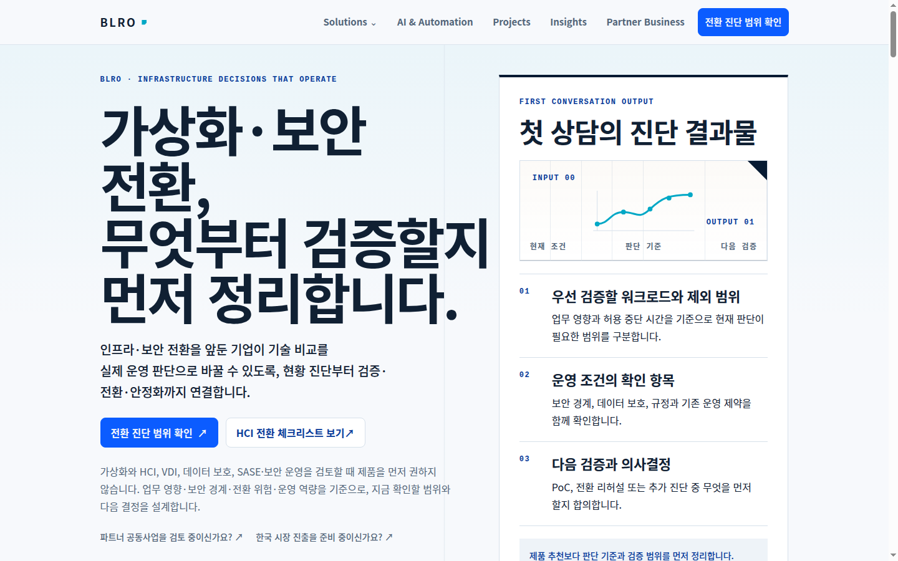
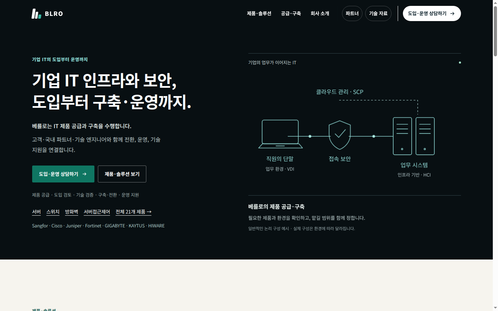
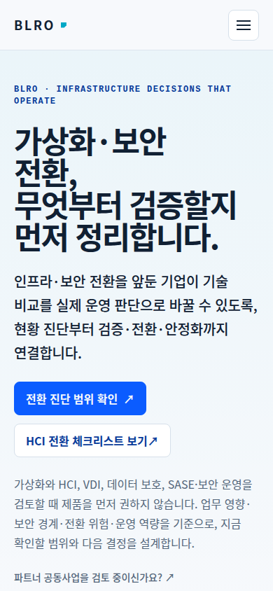
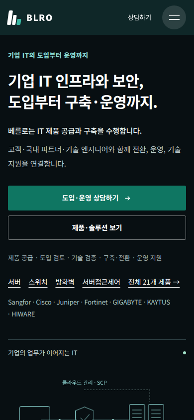
같은 폭으로 찍은 나머지 주요 화면은 captures/live/, captures/local/에 있다. solutions, HCI, VDI, 보안 또는 고객, 회사, 문의. 뷰포트 첫 화면이다. 공개 홈 전체 높이는 약 10449px이다.
유지: 진단 CTA 하나, 고객명을 꾸미지 않는 Projects, 역할 3개 계약. 약함: 정본 문장이 둘, 홈이 같은 무게의 카드를 반복, 경로 그림이 정지, 솔루션에서 다음에 보낼 정보가 약함.
2. Cloudflare에서 본 모션
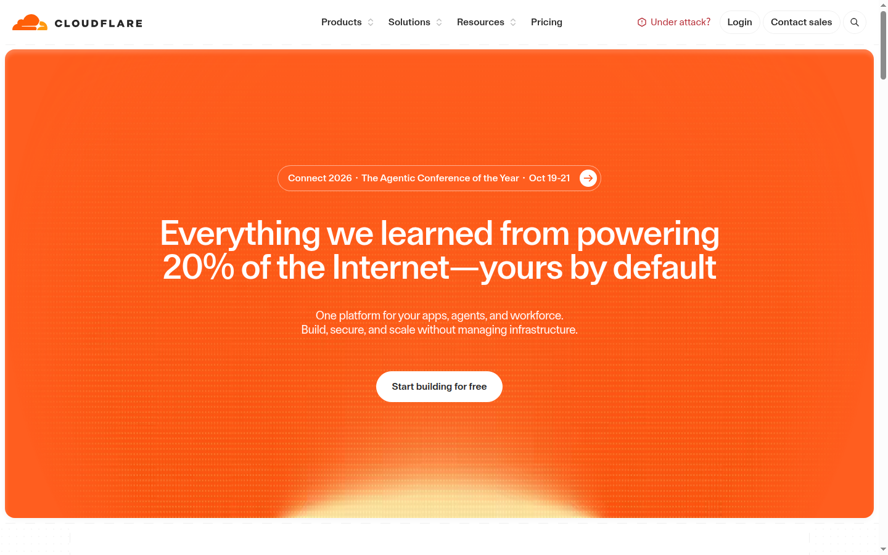
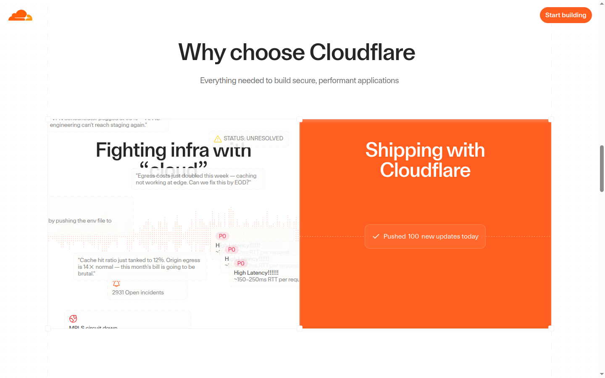
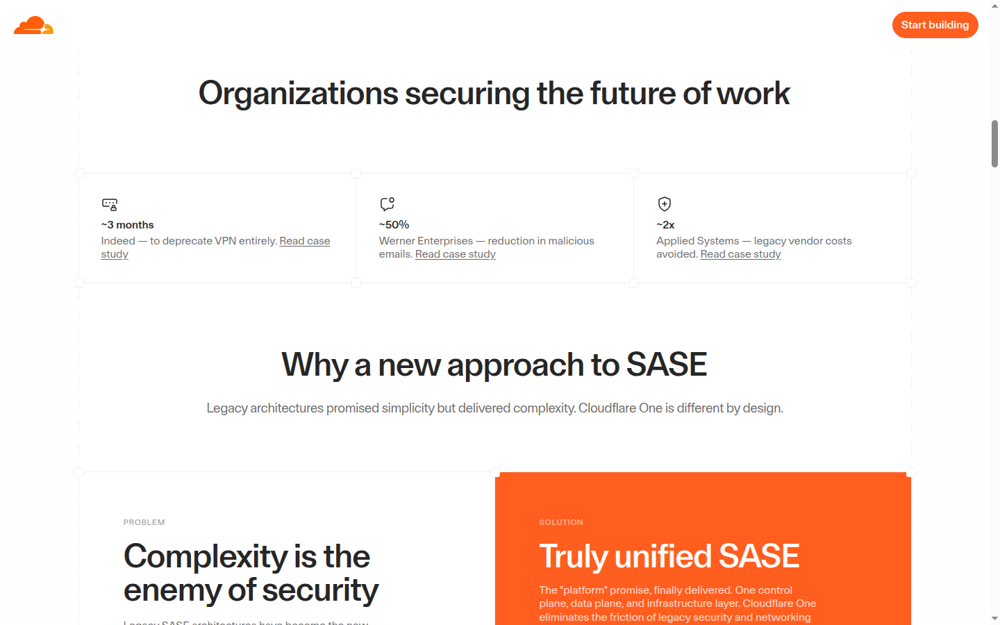
- 홈
getAnimations()약 230.canvas-fade-in1s,waveform-scroll20s linear,marquee8s,infinite-scroll40–80s,float5s translateY 0/−8px. - 스크롤은 주장을 단계로 자른다. 스티키 CTA는 작아진 버튼 하나.
- 호버는 컨트롤만. 감소 모션에서 shimmer를 끈다.
가져올 것: 한 장면 한 주장, 스크롤이 설명을 진행, 감소 모션. 주황, 지구본, 마키, 80초 루프, 에이전트 문장은 가져오지 않는다.
3. 개편
목표. 첫 화면에서 공급과 검증이 한 경로임을 말하고, 스크롤이 HCI·VDI·보안의 순서를 보여 준 뒤 역할별 문의로 보낸다.
권고 문장. 제품 공급과 전환 검증을 한 경로로 맡깁니다. 공개 사이트의 진단과 2.1.0의 공급을 둘 다 지우지 않는다.
IA
홈 → 솔루션(HCI, VDI, 네트워크·보안, 백업·DR, SASE) → Projects → 회사 → 문의. 고객/파트너/엔지니어 경로는 2.1.0 계약대로 유지. Insights와 AI는 1차 내비에서 내리고 솔루션·자료로 보낸다. 벤더 한국 진출은 오너 확인 전 홈에 두지 않는다.
페이지
- 홈: 문장, 진단 CTA, 경로 계기, 4단 스크롤(범위, 경로, 검증, 인수), 역할 3, 솔루션 3.
- 솔루션: 같은 그림에서 해당 노드만 점등. 검토 질문, 통과 기준, 하지 않는 약속, 보낼 정보.
- Projects: 고객명 없는 판단 과정 유지. 번호만 진입.
- 회사: 하는 일 / 하지 않는 일. 허락 없는 로고 자리는 만들지 않는다.
- 문의: 역할 선택 시 준비 목록만 교체. 높이 애니메이션 없음.
모션 시스템
| 토큰 | 값 |
|---|---|
| 진입 | 420ms, cubic-bezier(0.22, 1, 0.36, 1), opacity + translateY 12px |
| 호버 | 180ms, 버튼·링크만 |
| 경로 | animation-timeline: view(), stroke-dashoffset |
| 스태거 | 70ms, 최대 4 |
| 예산 | 무한 루프 0. 폴백은 IntersectionObserver |
| 감소 모션 | 경로 완성, 펄스 없음 |
| 모바일 | 스티키 해제, 핀 섹션 없음 |
CSS scroll-driven이 1순위다. 워크스페이스에 GSAP이 없고 라이선스와 번들을 피할 수 있다. Motion One은 문의 역할 전환처럼 CSS로 부족한 곳만. ScrollTrigger 핀은 지금 필요 없다.
시각
종이 #f4f1ea, 잉크 #102033, 검증 그린 #1f7a4d, 액션 파랑 #1d4ed8 하나. Pretendard, 좌측 정렬, 데스크톱 제목 68px 상한. 사이드 컬러 보더 없음. 토큰은 DESIGN.md.
기술과 일정
공개 정본은 Next + Cloudflare로 보인다. 로컬 functions/를 공개 배포 대상으로 확인하지 못했다. 모션은 오너가 고른 정본에만 넣는다. 권고는 공개 Next에 경로 그림과 역할 계약을 합치는 것이다.
| 단계 | 내용 | 공수 |
|---|---|---|
| 0 | 정본 문장, Insights·벤더 내비 | 0.5일 |
| 1 | 홈과 모션 시스템 | 4–6일 |
| 2 | HCI, VDI, 보안 | 4일 |
| 3 | Projects, 회사, 문의 | 3일 |
| 4 | 역할 3경로를 공개 IA에 연결 | 5–8일 |
| 5 | 감소 모션, 키보드, 실기기 | 2일 |
위험: 두 저장소를 동시에 고치면 정본이 다시 갈라진다. 없는 고객 수치를 카운터로 채우면 신뢰가 깨진다. 핀 섹션은 모바일 스크롤을 가둔다.
4. 시안
prototype/index.html. 히어로와 스크롤 스토리. 감소 모션이면 경로가 완성 상태다.
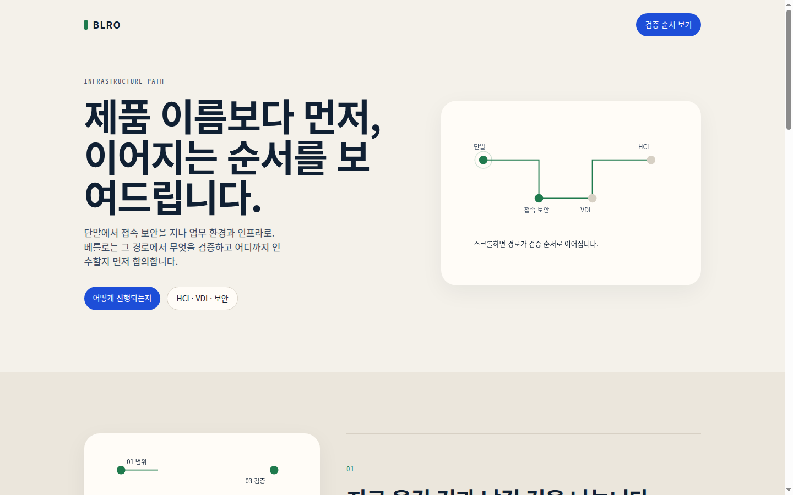
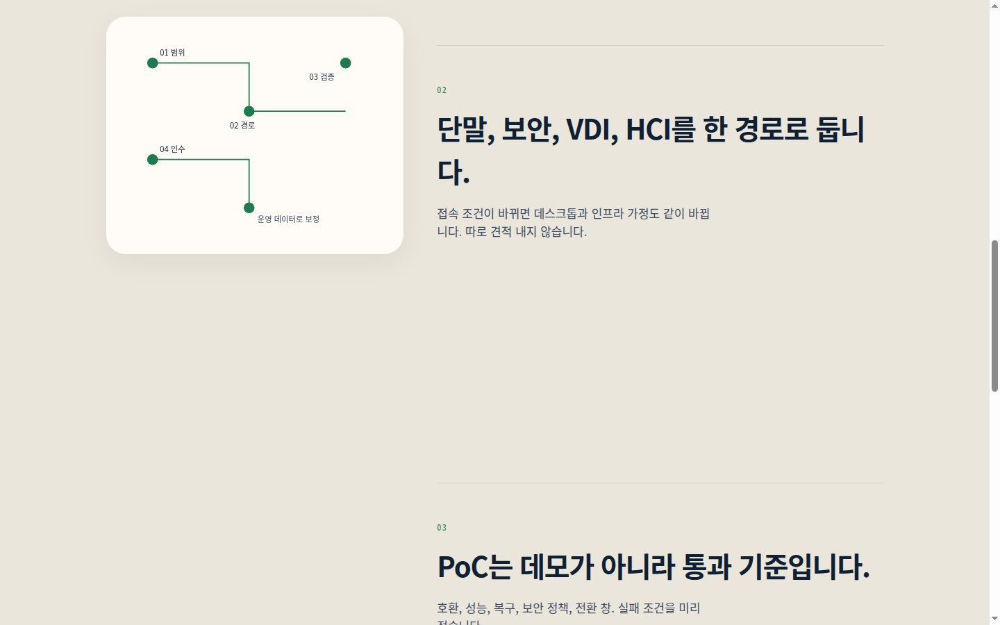
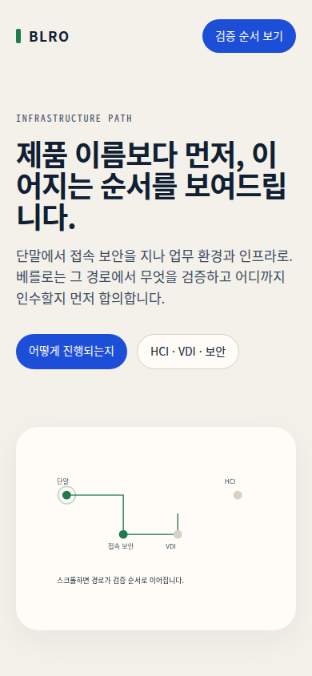
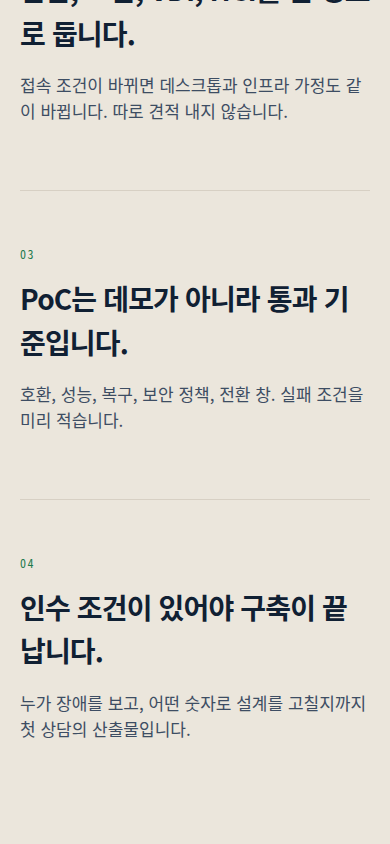
5. 물어볼 것
- 정본 문장은 진단인가, 공급·구축인가, 한 문장으로 합칠 것인가.
- Insights와 글로벌 벤더 한국 진출을 1차 내비에 남길 것인가.
- Projects를 늘릴 공개 가능한 판단 기록이 있는가. 고객명과 수치는 여전히 빼 둔다.
- 구현은 공개 Next인가, 2.1.0인가. 이 문서는 구현하지 않았다.
같은 내용의 마크다운: BLRO-REDESIGN-PROPOSAL-KO.md